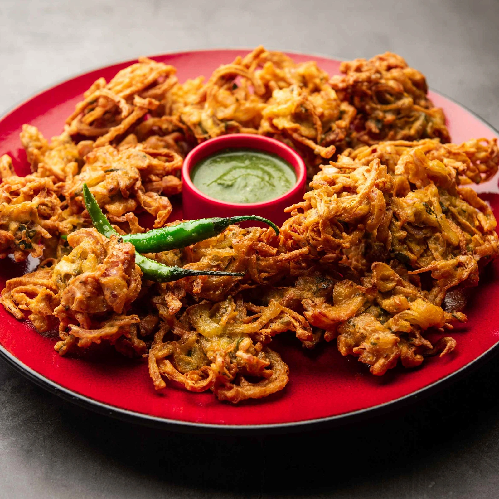
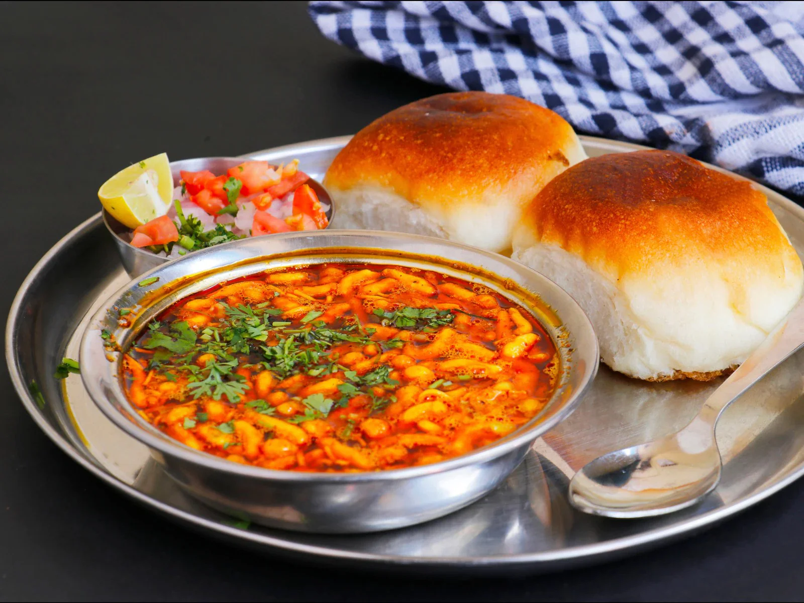

Pune's snack culture is bursting with flavor! Whether it's crunchy chaats or spicy fritters, there's something for everyone. Here's a collection of must-try snacks and chaats with their popular local spots!

Bhel Puri
A tangy mixture of puffed rice, chutneys, and veggies
📍 Tulshibaug

Aloo Tikki
Crispy spiced potato patties served with chutneys
📍 FC Road

Pani Puri
Crunchy puris filled with spicy and tangy water
📍 Kothrud

Dahi Puri
Mini puris filled with curd, chutneys, and sev
📍 J.M. Road

Kanda Bhaji
Deep-fried onion fritters, perfect with evening chai
📍 Swargate

Samosa
Classic triangular pastry filled with spiced potato
📍 Camp Area

Dabeli
Spicy, sweet, and crunchy snack from Gujarat
📍 Katraj

Batata Vada
Deep-fried spicy mashed potato balls with chutney
📍 Shivajinagar

Misal Pav
Spicy sprouted curry topped with farsan and pav
📍 Deccan
🌶️ Chaat vendors in Tulshibaug serve over 1000 customers daily!
🍽️ Kanda Bhaji is a monsoon essential in Pune households
🥔 Aloo Tikki is often paired with sweet tamarind chutney
🥣 Many Pani Puri stalls use flavored water like hing, jeera & mint!
🍛 Misal Pav was originally created as a nutritious breakfast option
🥟 The samosa was introduced to India by Middle Eastern traders
"I crave the Bhel Puri from Tulshibaug every evening!" – Sneha D.
"The samosas in Camp Area are unmatched!" – Vikram S.
"Best Dahi Puri in the city at JM Road!" – Priya M.